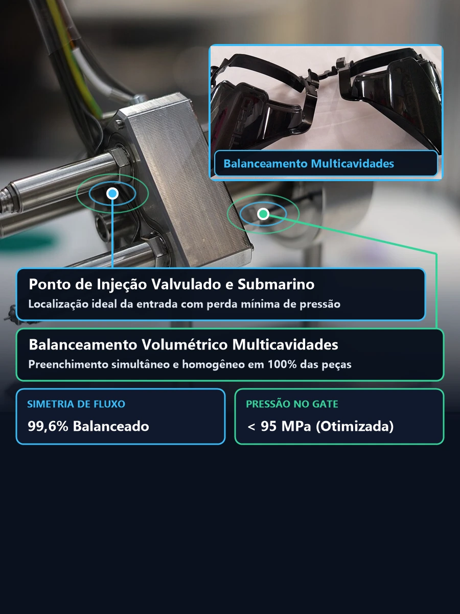
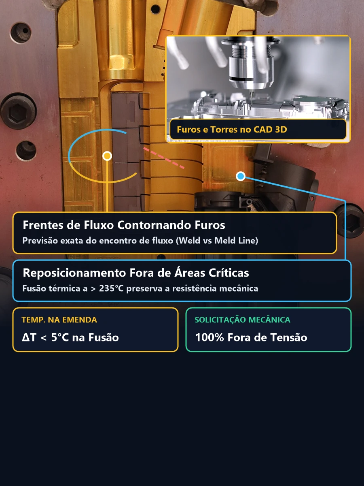
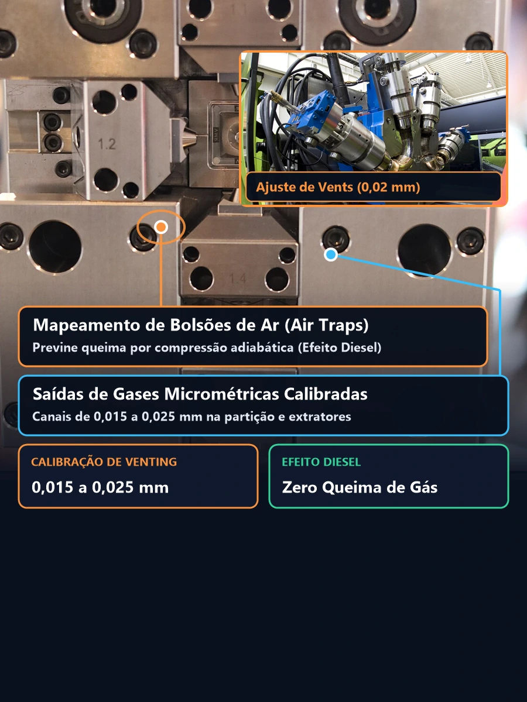
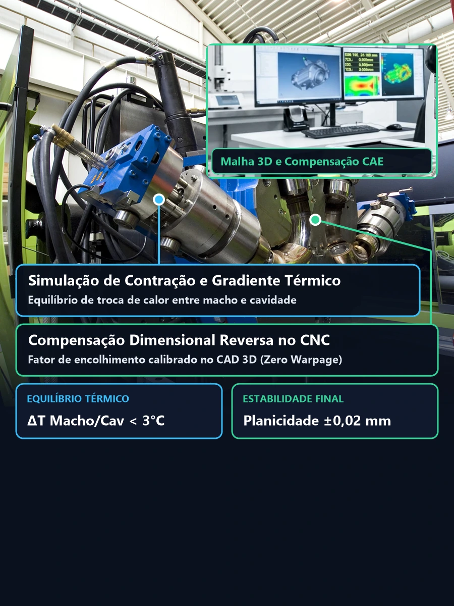
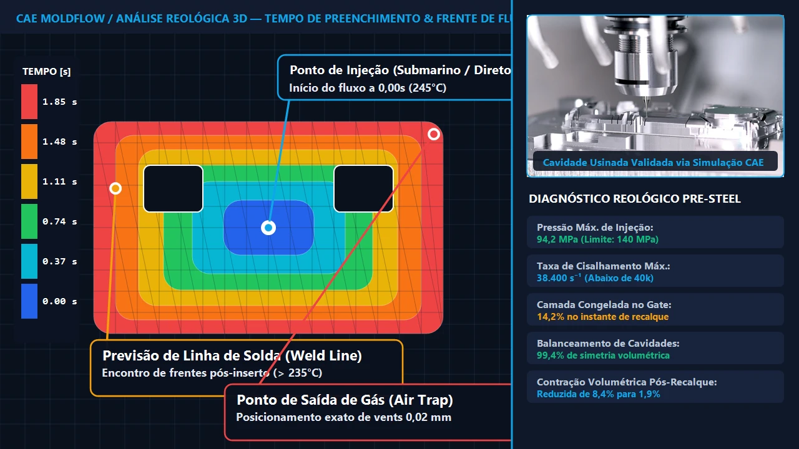
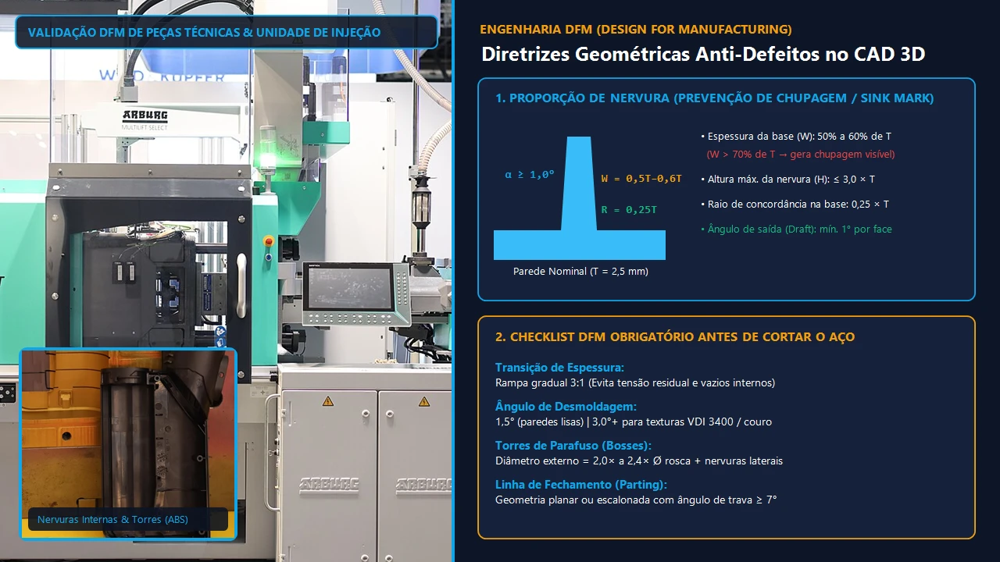

Takeaway Técnico (Diretriz para Projetistas, Compradores Técnicos e Engenheiros de Produto):
Alterar uma espessura de parede, reposicionar um ponto de injeção ou corrigir um ângulo de saída em ambiente virtual CAD/CAE 3D custa frações de centavos e leva poucas horas; modificar uma cavidade já usinada, temperada a 52 HRC e polida em aço H13 na ferramentaria custa dezenas de milhares de reais e atrasa o lançamento do produto em semanas. Contratar uma engenharia e projeto de moldes fundamentada em simulação reológica Moldflow é o maior seguro técnico e financeiro para indústrias automotivas, eletroeletrônicas, médicas e de bens de consumo.
O que a Análise Reológica Moldflow e a Engenharia de Moldes Revelam com Antecedência?
Ao alimentar a estação CAE com a curva de viscosidade (modelo Cross-WLF), o diagrama pvT (Pressão-Volume-Temperatura) exato do polímero selecionado e a janela de processo da injetora termoplástica, nossa simulação computacional mapeia e corrige preventivamente os 4 fenômenos críticos do projeto do molde:

Reologia de Preenchimento e Gate
1. Posição e Pressão do Ponto de Injeção
Dimensionamento de entrada submarina, leque ou câmara quente valvulada com 99,6% de simetria.

Integridade Estrutural e Fusão
2. Linhas de Solda e Emendas Térmicas
Deslocamento estratégico de frentes de fluxo para fora de regiões de tração e impacto.

Prevenção de Efeito Diesel
3. Bolsões de Ar e Saídas de Gases
Calibração de microcanais de desaeração (0,015 a 0,025 mm) na linha de partição e pinos extratores.

Estabilidade Dimensional Pós-Extração
4. Empenamento e Contração Volumétrica
Equilíbrio térmico macho/cavidade e compensação reversa de encolhimento na usinagem CNC.
1. Posição e Pressão do Ponto de Injeção
Identifica a localização ideal da entrada (submarina, capilar, em leque, anelar ou câmara quente valvulada) para garantir preenchimento volumétrico homogêneo, minimizar a queda de pressão e assegurar balanceamento de 99,6% em moldes de múltiplas cavidades.
2. Linhas de Solda e Emendas Térmicas
Prevê com precisão milimétrica onde as frentes de fluxo de resina fundida se encontram após contornar furos, buchas e rebaixos, permitindo reposicionar os pontos de injeção ou alterar espessuras locais para afastar as linhas de solda das regiões de maior solicitação mecânica.
3. Bolsões de Ar e Saídas de Gases
Mapeia os pontos exatos de fim de preenchimento onde o ar fica aprisionado causando efeito diesel (carbonização do plástico por compressão adiabática), permitindo projetar saídas de gases micrométricas (0,015 a 0,025 mm) nas linhas de partição, postiços e pinos extratores.
4. Empenamento e Contração Volumétrica
Simula a deformação geométrica pós-desmoldagem causada por gradientes térmicos assimétricos entre macho e cavidade e pela orientação molecular das fibras, viabilizando a compensação dimensional reversa no CAD 3D antes da usinagem CNC.
Arquitetura Construtiva na Engenharia e Projeto de Moldes: Qual Selecionar?
A definição da arquitetura construtiva durante a fase de engenharia e projeto de moldes governa diretamente o investimento inicial (CAPEX da matriz) e o custo unitário da peça injetada (OPEX de produção seriada). A escolha técnica depende da geometria do produto, da presença de contra-saídas (undercuts), da exigência estética do ponto de injeção e da demanda anual do projeto:
| Arquitetura do Projeto de Molde | Sistema de Alimentação | Separação de Galho / Resíduo | Redução de Ciclo | Aplicação Industrial Recomendada |
|---|---|---|---|---|
| Molde de 2 Placas (Canal Frio) | Entrada direta, lateral (edge gate), leque ou submarina | Automática (no gate submarino) ou degolagem manual/robô | Referência base | Lotes pequenos a médios, peças técnicas estruturais e menor investimento inicial de ferramental. |
| Molde de 3 Placas (Pin-Point) | Entrada capilar (pin-point gate) no topo ou centro da peça | 100% automática na abertura da placa flutuante | Médio (+placa intermediária) | Peças cilíndricas, engrenagens concêntricas e multicavidades que exigem injeção central sem câmara quente. |
| Molde com Câmara Quente (Valvulada / Aberta) | Manifold aquecido com bicos térmicos ou pino valvulado | Zero geração de galho (0% perda de matéria-prima) | -18% a -35% no tempo de ciclo | Alta tiragem anual, polímeros de engenharia de alto custo (PC, PA66+FV, POM) e peças estéticas automotivas. |
| Molde Complexo (Gavetas, Lifters e Desenroscamento) | Híbrido ou Câmara Quente balanceada no CAE | Extração sincronizada com cilindros hidráulicos ou cremalheira | Otimizado por atuação simultânea | Conexões hidráulicas roscadas, caixas com janelas laterais, travas internas (snap-fits) e carcaças complexas. |
Os 3 Pilares Técnicos da Engenharia e Projeto de Moldes de Alta Performance
Para que uma matriz opere em regime contínuo 24/7 por mais de 500.000 a 1.000.000 de ciclos (Classe 101/102 SPI) sem fadiga mecânica ou variação dimensional, nosso departamento de engenharia executa o projeto sobre três disciplinas interdependentes:
Modelagem CAD 3D e Contração Anisotrópica
Polímeros semicristalinos (PP, PA66, POM, PBT) e compostos carregados com fibra de vidro contraem de forma diferente no sentido do fluxo e no sentido transversal. Nossa engenharia aplica fatores de contração ortotrópicos calculados no Moldflow diretamente na cavidade e no macho 3D, garantindo que cotas críticas de rolamentos e vedações atinjam tolerâncias de ±0,02 mm após a estabilização térmica.
Cinemática de Gavetas, Lifters e Extração
Detalhes negativos externos e internos exigem mecanismos móveis de precisão. Projetamos gavetas acionadas por pino inclinado (15° a 22°) ou cilindros hidráulicos com placas de desgaste em bronze grafitado e cunhas de travamento (heel blocks) temperadas para suportar a pressão de injeção sem abrir rebarba, além de pinças angulares (lifters) e sistemas de desenroscamento rotativo.
Engenharia Térmica e Regime Turbulento (Re > 4.000)
Como o resfriamento consome até 70% do tempo total do ciclo de injeção, projetamos circuitos independentes com chicanas (baffles), borbulhadores (bubblers), postiços de alta condutividade térmica em Cobre-Berílio (CuBe2) e canais conformais. O dimensionamento hidráulico garante escoamento turbulento (Re entre 4.000 e 8.000), extraindo calor de forma uniforme e eliminando pontos quentes.
Regras de Ouro no Design for Manufacturing (DFM) para Peças Injetadas
Antes de iniciar o detalhamento construtivo do porta-molde na fabricação de moldes de injeção, emitimos o Relatório de Análise DFM auditando a geometria 3D da peça plástica sob 4 diretrizes fundamentais:


Dossiê Técnico de Entrega na Engenharia e Projeto de Moldes
Ao contratar nossa engenharia e projeto de moldes (seja de forma avulsa para a sua ferramentaria interna ou integrada ao nosso pacote Turnkey de fabricação e injeção), sua empresa recebe o pacote completo de engenharia para total autonomia de fabricação e manutenção futura da matriz:
Montagem completa do molde em formato nativo e neutro (STEP AP214 e Parasolid .x_t) com cavidades, machos, gavetas, postiços e eletrodos de erosão modelados.
Desenhos executivos de bancada e usinagem (PDF/DWG) com tolerâncias geométricas GD&T, ajustes deslizantes ISO H7/g6, durezas HRC e rugosidades SPI/VDI.
Relatório completo de simulação contendo tempo de preenchimento, pressão máxima na bucha, força de fechamento (tonelagem), mapa de soldas e warpage.
Especificação padronizada de aços (P20, 2738, H13, S136) e componentes normalizados (Polimold, DME ou Hasco) para reposição imediata de pinos, buchas e molas.
Perguntas Frequentes sobre Engenharia e Projeto de Moldes
1. O que compõe o escopo completo de Engenharia e Projeto de Moldes B2B?
O escopo completo de engenharia e projeto de moldes abrange a revisão de manufaturabilidade da peça plástica (DFM), a simulação reológica e térmica em software CAE (Moldflow), o modelamento 3D paramétrico do porta-molde e das cavidades, o dimensionamento cinemático de gavetas e pinças angulares (lifters), os desenhos 2D de usinagem com tolerâncias GD&T e a lista padronizada de materiais (BOM).
2. Em quais formatos de arquivo posso enviar meu produto para análise e projeto do molde?
Aceitamos arquivos 3D nativos de SolidWorks (.sldprt/.sldasm), Siemens NX (.prt), Autodesk Inventor (.ipt) e CATIA (.CATPart), além de geometrias neutras universais em formato STEP (.stp / AP214), Parasolid (.x_t) e IGES (.igs), acompanhadas do desenho técnico 2D em PDF ou DWG indicando cotas críticas de montagem e tolerâncias ISO.
3. Como a engenharia de projeto do molde corrige o empenamento em resinas com fibra de vidro?
Polímeros reforçados como PA 6.6 + 30% Fibra de Vidro apresentam contração anisotrópica (0,3% no sentido do fluxo contra até 0,9% no sentido transversal). A engenharia de moldes simula a orientação tensorial das fibras no Moldflow, equilibra a troca térmica entre macho e cavidade (ΔT < 3°C) e aplica fatores de escala diferenciados nos eixos X, Y e Z do modelo CAD 3D antes da usinagem CNC.
4. Qual a diferença entre projetar um molde de câmara quente e um molde de canal frio?
O projeto de molde com câmara quente utiliza um manifold aquecido e bicos torpedos ou valvulados que injetam o polímero fundido diretamente na peça, eliminando 100% do desperdício de galho e reduzindo o tempo de ciclo em 18% a 35%. Já o molde de canal frio (2 ou 3 placas) exige o dimensionamento de canais trapezoidais ou circulares balanceados que solidificam a cada ciclo e demandam moagem ou reciclagem.
5. Vocês realizam prototipagem rápida 3D antes da fabricação definitiva do molde de aço?
Sim. Antes de liberar o corte do aço P20 ou H13 na matrizaria, executamos a prototipagem funcional por manufatura aditiva de alta resolução (estereolitografia SLA, sinterização seletiva a laser SLS em Nylon ou usinagem CNC em blocos maciços de ABS/POM). Isso permite validar interferências de montagem, ergonomia e encaixes (snap-fits) com risco zero de retrabalho ferramental.